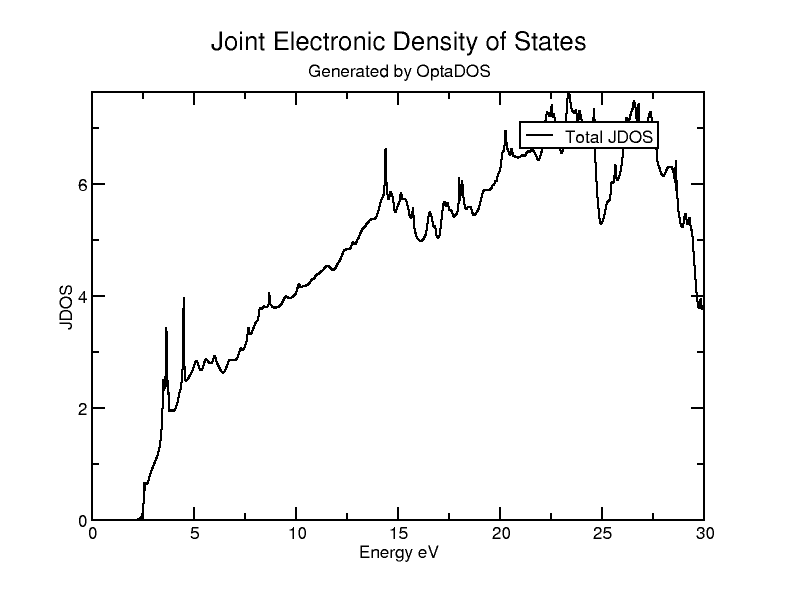
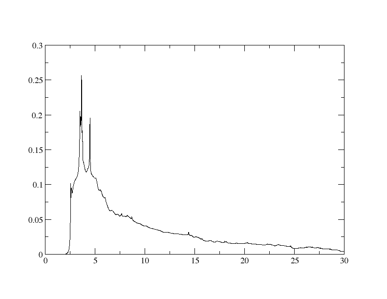
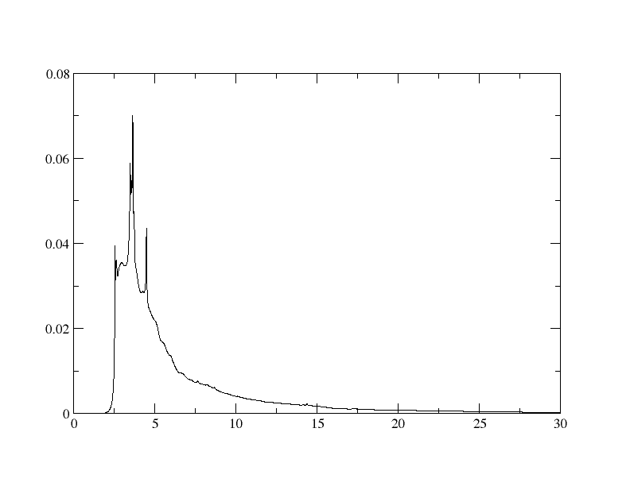
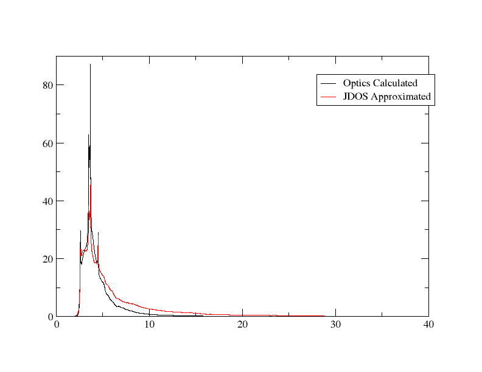
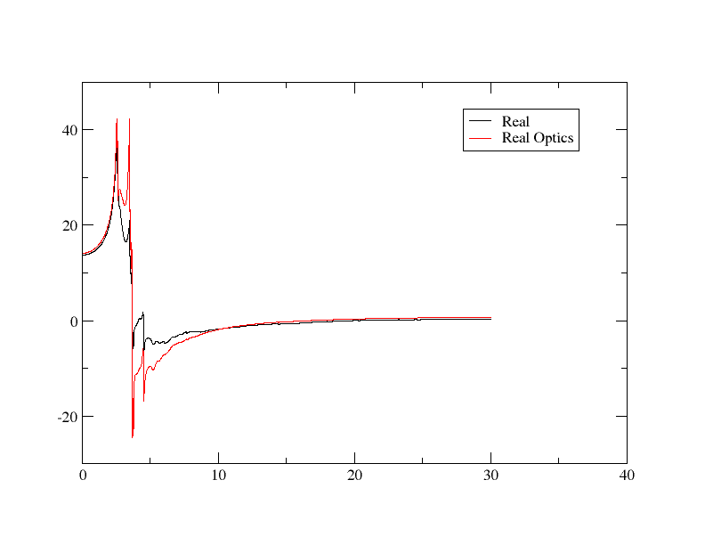
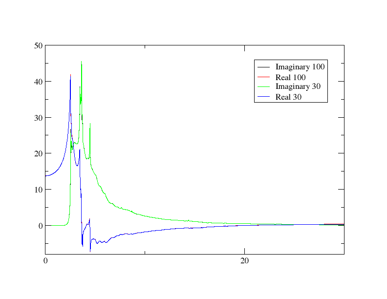
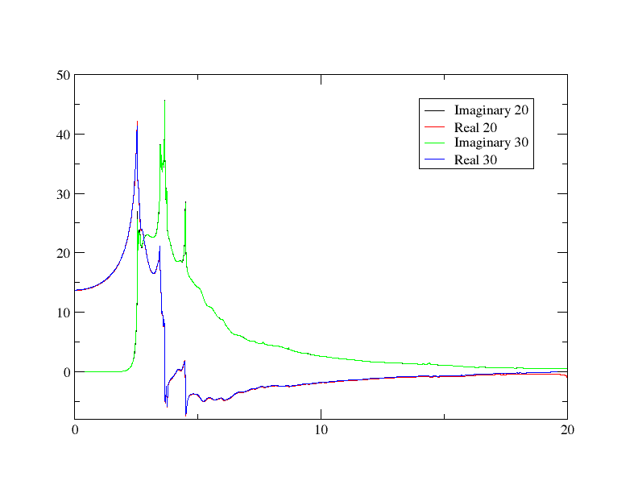
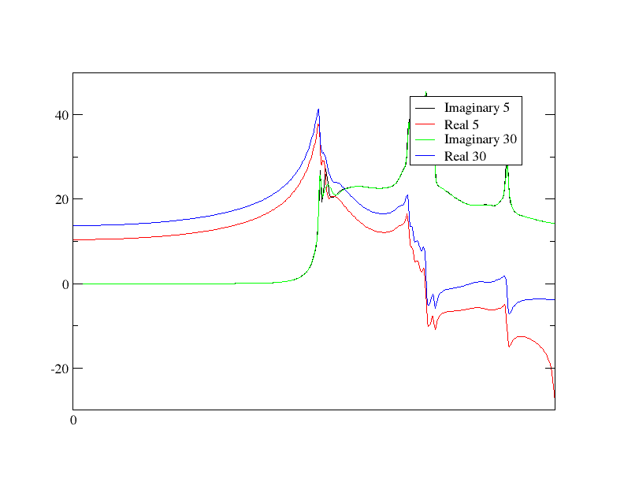
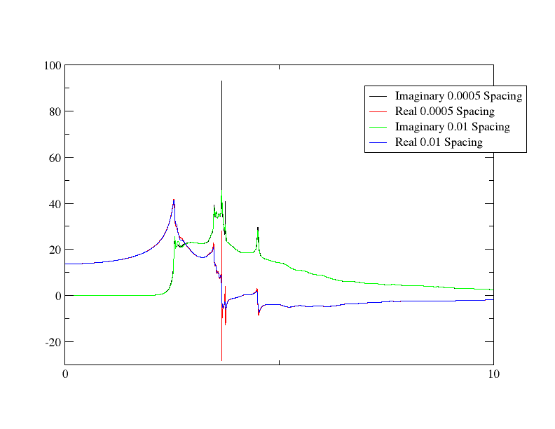
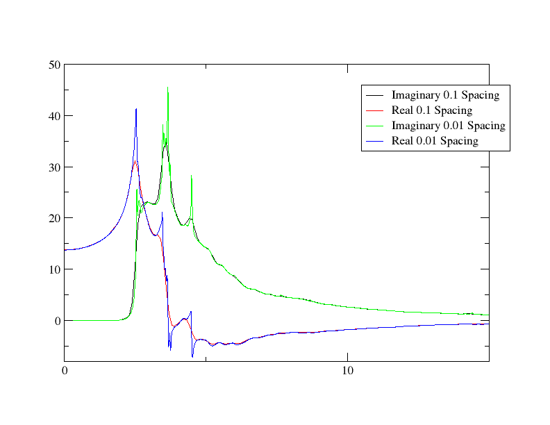

联合态密度（JDOS）
联合态密度（JDOS）本质上是导带与价带之间能隙范围内的态密度——这使得我们可以计算在给定光子能量下激发发生的概率。人们可以直观地理解这一点如何导致光学性质的计算：那些能量对应于导带与价带之间能隙的光子将与材料相互作用，从而产生其光学性质。
在本教程中，我们将计算硅的JDOS，并将其与介电函数的虚部和实部联系起来。
JDOS 计算
让我们先实际获取JDOS的结果。在以下内容上运行Castep cell 文件
Si.cell
%BLOCK LATTICE_CART
2.73 2.73 0.00
2.73 0.00 2.73
0.00 2.73 2.73
%ENDBLOCK LATTICE_CART
%BLOCK POSITIONS_FRAC
Si 0.0 0.0 0.0
Si 0.25 0.25 0.25
%ENDBLOCK POSITIONS_FRAC
SYMMETRY_GENERATE
KPOINTS_MP_GRID 10 10 10
SPECTRAL_KPOINTS_MP_GRID 10 10 10
并且 param 文件
Si.param
随后，使用 Optados 输入文件运行 Optados。
Si.do.i
TASK : jdos
JDOS_MAX_ENERGY : 30
JDOS_SPACING : 0.01
EFERMI : optados
DOS_SPACING : 0.1
BROADENING : adaptive # Default
ADAPTIVE_SMEARING : 0.4 # Default
FIXED_SMEARING : 0.3 # Default
SET_EFERMI_ZERO : true # Default
NUMERICAL_INTDOS : false # Default
FINITE_BIN_CORRECTION : true # Default
这条线 TASK : jdos 是告诉它计算我们感兴趣的JDOS的。这将生成该文件 Si.jadaptive.dat （以及配套的） agr 文件）。The dat 数据表应以如下形式开始
1st 列是能量，和 2并 是JDOS。 agr 文件让我们可以用xmgrace制作一个漂亮的图表（当然，你也可以用你喜欢的软件绘制结果）——我们来运行
xmgrace Si.jadaptive.agr
结果应如下所示：

虚介电常数
现在我们已经得到了结果，让我们看看它们是如何用来获得介电函数的。您可能会立即注意到，上面图表的形状与介电函数的任一成分都完全不同。我们需要对这些结果进行处理，才能使其具有意义。
我们将通过使用Python脚本开始处理数据。
energies = []
imaginaries = []
input_file = 'Si.jadaptive.dat'
output_file = 'imaginary.dat'
new_lines = []
with open(input_file, 'r') as infile:
for line in infile:
if "#" in line:
continue
parts = line.split()
if len(parts) == 2:
energy = float(parts[0])
jdos = float(parts[1])
energies.append(energy)
if jdos == 0.0 or energy == 0:
eps2 = 0
else:
eps2 = (jdos/energy**2)
imaginaries.append(eps2)
new_line = f"{energy} {jdos} {test}\n"
new_lines.append(new_line)
with open(output_file, 'w') as outfile:
outfile.writelines(new_lines)
imaginary.dat 包含能量、JDOS以及我们对虚介电函数在3rd 列。这通过如下关系式来近似表示
\epsilon_2 \propto \frac{\text{JDOS}}{\omega^2}
其中在行中实现的
我们可以绘制这个 dat 使用xmgrace处理批处理脚本中的文件
plot.bat
以获取纯虚部输出。图表应如下所示：

我们开始看到一些与虚介电函数的虚部相似之处，但显然仍有改进空间——该计算是通过将我们得到的结果乘以一个矩阵元来实现的，而在此情况下我们假设该矩阵元与能量无关，这在现实中并不成立。我们可以通过使用如下关系式来改进这一近似。
\epsilon_2 \propto \frac{1}{m^*}
这一点要正确实现起来非常困难；有效质量很难获得，且依赖于k空间中的位置等。然而，我们可以用一个近似方法简化这个问题：在能带边缘附近，有效质量与能量成正比。
说明
这一点确实具有一定的数学依据——如果你想了解其来源，请参见 本文
让我们修改其中一条线路的地方 eps2 在Python脚本中计算
重新运行相同的步骤现在得到如下图形：

总体来看，你可以看到它趋于平稳的速度要快得多——这与更准确计算出的介电函数情况一致。
为了确认结果是合理的，让我们将此结果与实际的Optados光学计算结果一起绘制出来。您可以在开头部分看到如何获取这些数据。 光学教程，或者您可以下载相关文件 dat 文件 这里因为我们是通过简单的比例关系得到结果的，因此必须对结果进行缩放，以使其与实验数据相符——通过修改Python脚本中的参数来实现这一调整。 eps2 计算行至
通过反复尝试发现，650 能给出一个合理的匹配——这仅仅是估算在整个近似过程中被忽略的比例常数。你可以使用批处理文件
READ BLOCK "Si_epsilon.dat"
BLOCK XY "1:3"
S0 LEGEND "Optics Calculated"
READ BLOCK "imaginary.dat"
BLOCK XY "1:3"
S1 LEGEND "JDOS Approximated"
用 xmgrace 绘图。你可以看到生成的图表中它们非常相似：

实际介电常数
我们已经看到如何利用JDOS计算介电函数的虚部，现在我们将探讨如何计算其实部。其实部实际上仅通过虚部来计算，使用克拉默-克罗内格关系——我们将对此进行演示。
我们将使用的方程是
\epsilon_1(\omega) = 1 + \frac{2}{\pi} \mathcal{P} \int_{0}^{\infty} \frac{\omega' \epsilon_2(\omega')}{\omega'^2 - \omega^2} \, d\omega'
我们将再次忽略比例常数，并仅调整结果。将这段代码添加到之前的Python脚本中
import numpy as np
energies_arr = np.array(energies)
eps2_arr = np.array(imaginaries)
def kramers():
eps1_arr = []
for i, e in enumerate(energies_arr):
real = 0
sub = (energies_arr**2)-(e**2)
sub[i] = np.inf
integrand = (energies_arr * eps2_arr)/sub
real = 1 + 0.6(np.trapz(integrand, energies_arr))
eps1_arr.append(real)
return eps1_arr
eps1_arr = kramers()
data = np.column_stack((energies_arr, eps2_arr, eps1_arr))
np.savetxt("both.dat", data)
实现过程相当直接：对于每一个能量，方程中的积分都简单地针对每个能量进行计算。虽然方程中指定了在积分上加上1的操作，但比例常数是通过反复尝试确定的，直到得到一个合理的拟合结果（并且虚部已经以相同方式进行了缩放）。
数据随后被保存在 both.dat 和第 1st 列为能量，2并 虚介电常数和3rd 实介电常数。现在我们使用xmgrace比较虚部。适当调整批处理文件，你应该得到如下图形：

现在我们已经展示了介电常数的两部分如何与极化子密度谱相关联。
采样参数
我们现在将观察增加和减少的影响。 JDOS_MAX_ENERGY 并且 JDOS_SPACING 参数。 JDOS_MAX_ENERGY 确定所考察的最高能量带，而 JDOS_SPACING 确定结果采样的频率。我们将执行与上述完全相同的步骤（包括计算实部和虚部介电常数——这是关键部分）。建议您在新的目录中进行这些计算，以便更容易地比较结果。
最大能量
我们先来看如何增加和减少最大能量。我们将首先将其提高到100 eV。按照上述步骤运行完整流程（最终得到） both.dat 在新目录中），除了以下情况外 odi 包含该行的文件
JDOS_MAX_ENERGY : 100
改为30。在这种情况下，最实用的是将该结果与我们从30 eV最大能量处得到的结果进行比较——将两者绘制在同一张图上。这是使用适当的批处理文件获得的结果：

我们看到重叠几乎完美：超过30 eV的采样不会改善任何结果。这表明所有参与的能带能量均不超过30 eV。
现在我们尝试降低最大能量。如果我们尝试使用20 eV，并以与30 eV结果相同的方式将其绘图，我们会看到如下情况：

现在重叠已不再完美：尤其是在末端，实部变得越来越不同。欢迎尝试不同的低能量设置——你应该会注意到，最大能量越低，实部的差异越大，而虚部保持不变。下面的例子是针对极低的5 eV情况：

这表明，每个能量点的虚部是独立计算的，但由于实部是通过对所有能量进行积分得到的，因此当积分范围不覆盖完整相关区间时，虚部会变得越来越不准确。
间距
现在让我们尝试通过改变采样率来降低和提高采样速率。 JDOS_SPACING 参数。我们将将其与之前计算的标准 0.01 eV 结果进行比较。首先，我们尝试降低该值——请注意，如果设置过低，将使用于获取实部分量的 Python 脚本运行得极其缓慢；当点数过多时，积分会变得过于复杂。
JDOS_SPACING : 0.0005
用于下述结果中：

我们在这里看到，低频和高频下的结果几乎完全相同，即使在中间部分也大多一致，仅在极窄的能量范围内存在差异——而这正是出现最剧烈跃变的地方。增加采样数量未能捕捉到最大的增幅，而提高采样率则使得这些增幅得以显现。由于介电函数的其他部分并没有如此极端的变化，因此略微提高采样间距并未遗漏任何信息。
现在我们来看看当间距增大时会发生什么。结果大致符合预期：图表只是失去了部分细节，如下所示。

该图被平滑处理，如果你进一步增加间距，将会丢失越来越多的细节。尽管两种结果都会受到影响，但实部受到的影响更大：因为它通过积分虚部来计算，因此对采样变化极为敏感。